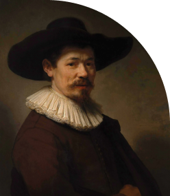
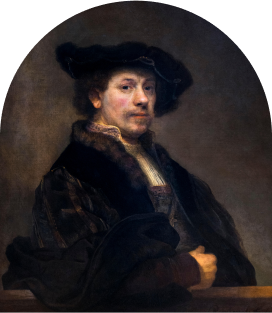

About Rembrandt
Renowned for his unparalleled mastery of light, shadow, and emotion, Rembrandt van Rijn is one of the most revered painters in art history. Born in 1606 in Leiden, Netherlands, Rembrandt's artistic journey took him through triumph and tragedy, shaping his unique style and vision
Rembrandt's artistry is characterized by his ability to capture the human experience with unparalleled depth and sensitivity. From intimate portraits to grand historical scenes, each of his works tells a story, inviting viewers to immerse themselves in the narrative.
Despite facing personal hardships and financial struggles, Rembrandt's artistic legacy endures, inspiring generations of artists and art enthusiasts. His innovative use of light and shadow, known as chiaroscuro, revolutionized the art world and continues to captivate audiences today.

Despite facing personal hardships and financial struggles, Rembrandt's artistic legacy endures, inspiring generations of artists and art enthusiasts. His innovative use of light and shadow, known as chiaroscuro, revolutionized the art world and continues to captivate audiences today.